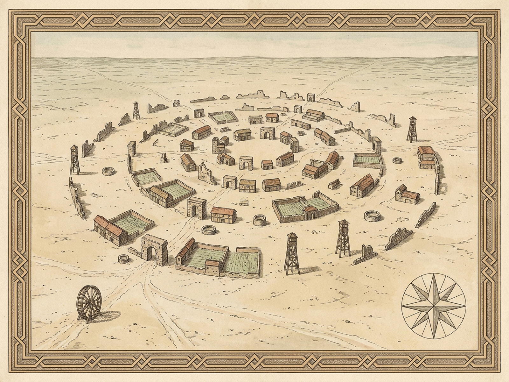

PENTHESILEADiluted Outskirts Across the Unwalled PlainHOURS0.40h (1.5 km)LIMBOS0WRINKLES0WALLS / GATES0SECTORLIMBO-S00·E00Endless Diluted PlainX 0 · Y 0 · BEARING 010°WALKING PLAINDrag plain or use WASD / Arrows to steer any 360° bearingContradictory Gesture Rose|R| = 0.000 · N = 0Ahead: 0Behind: 0Crosswise: 0360° Sweep: 0ROADSIDE INQUIRY · NO WITNESS STOPPED YET"If you ask the people you meet, 'Where is Penthesilea?' they make a broad gesture which may mean 'Here,' or 'Farther on,' or 'All around you,' or even 'In the opposite direction.'"Press [Q] or click Ask Passerby to question witnesses along the chalk road.Suburb Parcel Survey (10 Stones)10 / 10 IN REACHSelect any suburb parcel to inspect its structure across the diluted plain.Topological Doubt HorizonPHASE I / IIII · SoupII · OutskirtsIII · LimboPale Soup of OutskirtsYou advance for hours across a wide plain without walls, towers, or gates: only pale suburbs, dusty cabbage rows, plank fences, and low plaster buildings turning their backs to the road.centerLocatable: falseisOnlyOutskirtsOfItself: trueoutsideConfirmed: falseEPIGRAPH · UNRESOLVED BOUNDARYOutside Penthesilea does an outside exist? Or, no matter how far you go from the city, will you only pass from one limbo to another, never managing to leave it?Penthesilea · Royal Survey PlatesPLATE I · DISPERSION SURVEY OF THE UNWALLED SUBURBS

ROYAL PLATE PENDING QUOTA · 2026-11-11T06:21:14ZPLATE II · ELEVATION OF THE PALE OUTSKIRTS & RUSTY WHEEL